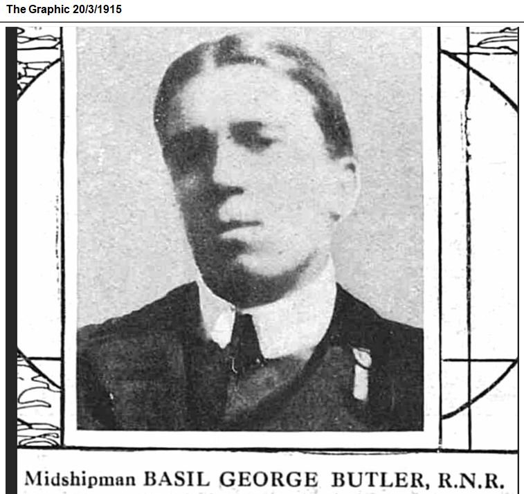
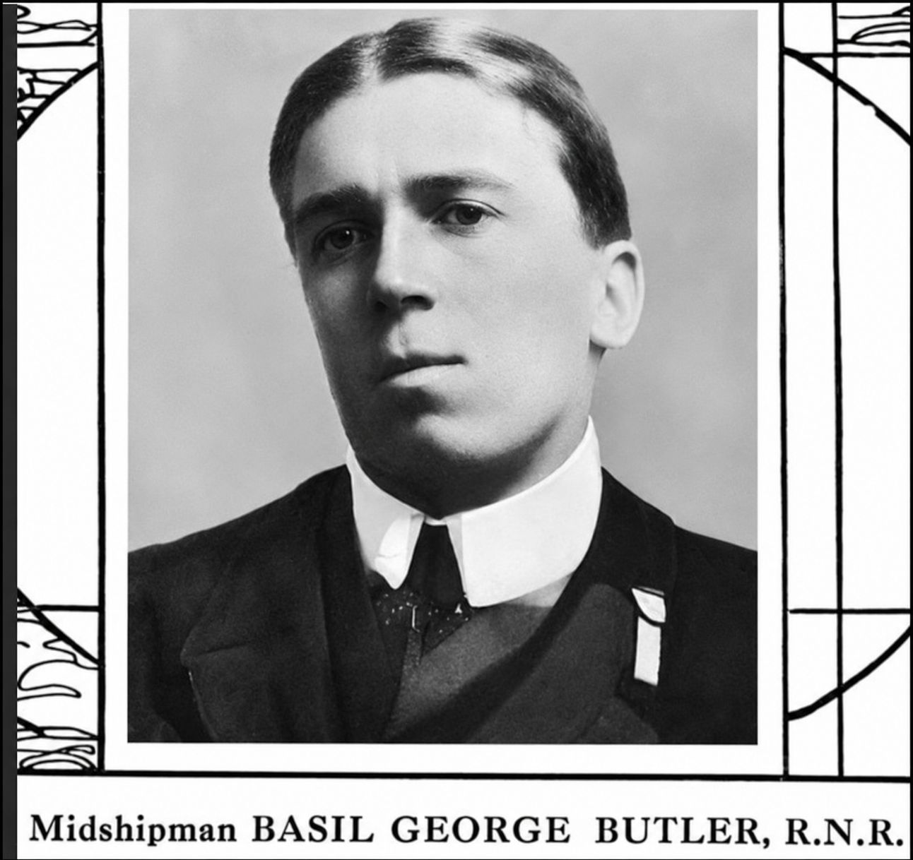

Basil George Butler


Basil Butler was educated at John Lyon School and trained for three years aboard the Conway before becoming a Royal Naval Reserve midshipman and serving aboard the armed merchant cruiser HMS Clan McNaughton. Aged 21, he was lost at sea when HMS Clan McNaughton disappeared in severe weather on 3 February 1915. His brother Peter also served on the same ship and died with him.
Civilian Life Basil was born on 8 December 1893, the son of George Butler, a physician, and Emily Butler of Ravens Court, Spencer Road, Wealdstone. He was one of several children, with older brothers and sisters including Gertrude, Cuthbert, Maurice, Dorothy and Marjorie, and a younger sister, Dora. He was educated at the John Lyon School and, at the age of 17, entered the training ship Conway in Liverpool.
Details of Butler's civilian life are limited in the surviving research. His family lived at Ravens Court in Wealdstone, where his father worked as a physician. After leaving the John Lyon School, he embarked on three years of training aboard the Liverpool training ship Conway. After completing his training, he entered the Royal Naval Reserve as a midshipman.
Military Life - Butler was a member of the Royal Naval Reserve and held the rank of midshipman. When the First World War began, he was called into active service. The Harrow Observer reported that he was drafted to HMS Clan McNaughton when the vessel was commissioned on 22 December 1914. The ship was a merchant vessel that had been requisitioned by the Admiralty and converted into an armed merchant cruiser for wartime patrol duties.
On 3 February 1915, HMS Clan McNaughton disappeared during severe weather in the North Atlantic. No distress signal was received and there were no survivors. Wreckage and empty lifebuoys were subsequently found, and the Admiralty stated that the vessel had sunk with all hands. Butler, aged 21, was among those lost.
As Butler had no known grave, he is commemorated on the Chatham Naval Memorial in Kent. The research also records that his brother Peter Butler died with him aboard HMS Clan McNaughton.